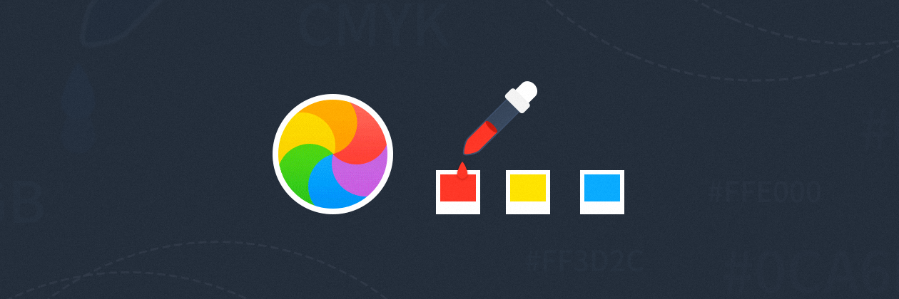
MakicLin
10月04日
第五章：三秒内完成配色
| 本文为付费栏目文章，您已订阅，可阅读全文 |
欢迎回来
上一章，我们完成了对字体知识的讲解。在第五章，我们将认识平面设计中另一个重要元素：配色。
合理的配色是平面设计作品的基础，优秀的配色甚至可以成为作品的闪光点。实际上，得到一套优秀的配色远比你想象的简单，有时我们只需确定一种颜色，就可以推算出配色方案。相信看完本章之后，你也可以在三秒内完成配色。
与字体知识一样，在学习如何完成配色方案之前，我们需要先了解一些基础知识。
颜色的意义
在设计一个 Logo 的时候，设计师通常会先设计出许多黑白色的版本，在初步定稿之后再加以颜色。这种过程保证了 Logo 即使是在单色的情况下也清晰明了，而最终颜色的加持，能增强 Logo 的整体效果。
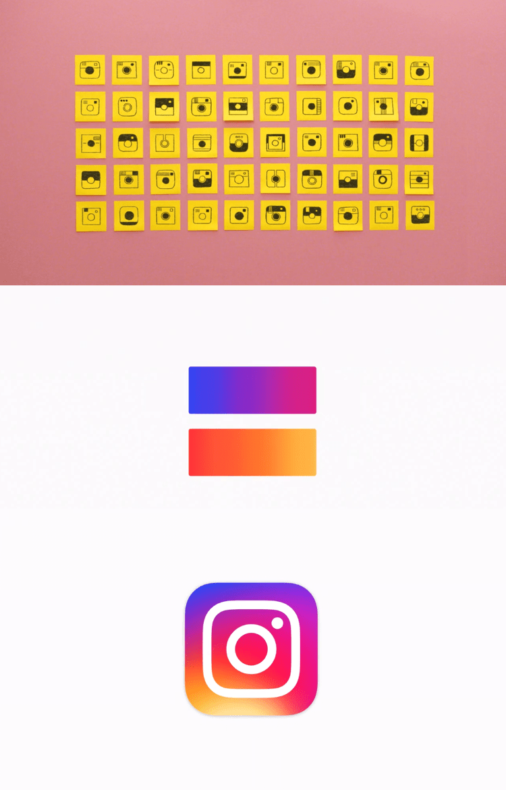
Instagram 的图标设计过程
这个过程说明了颜色的意义：为了增强你要传达的内容而存在。
比如要做一个环保主题的标志或者海报，你首先想到的一定是绿色，因为绿色与植物和自然相关；
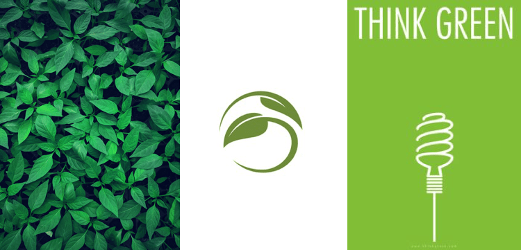
绿色可以象征环保
而一个邮件客户端呢会是什么颜色呢？蓝色可能是一个合理的选择， 因为蓝色与科技与工作相关。
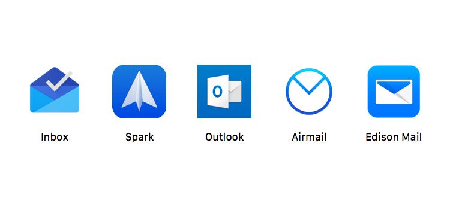
蓝色通常象征商务
一个更加熟悉不过的情景是在中国春节期间，很多应用会更新他们的图标为红色为主或带有红色元素，因为这才能显得出来节日气氛，从图标上就传达出有节日活动的感觉。
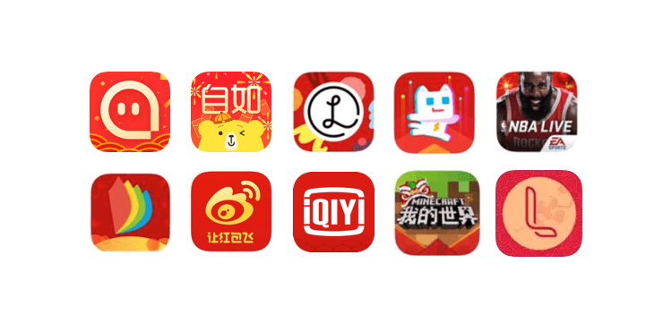
红色是新年的象征
这种颜色与意义对应的方法可以称为「颜色象征（Color Symbolism）」，这里有一份关于颜色与象征的表格，供你参考：
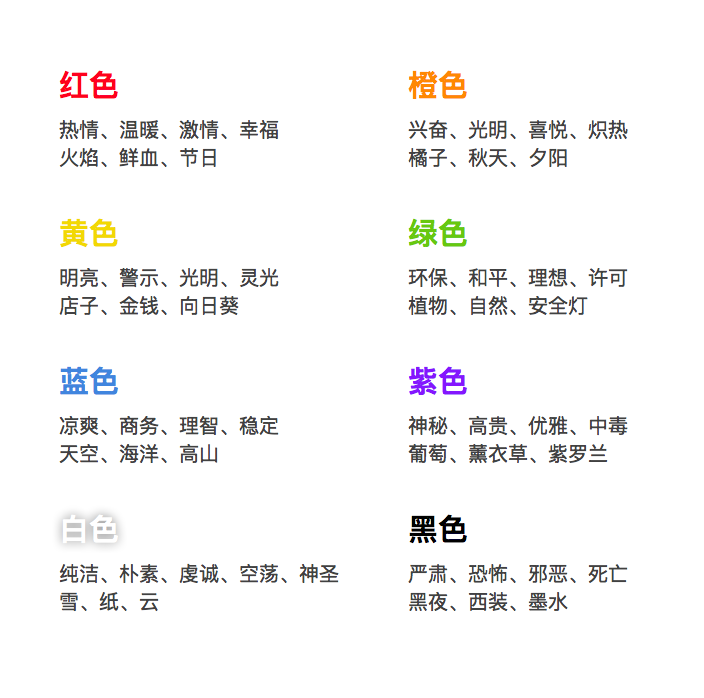
颜色象征的参考表格
颜色象征是我们搭配颜色最上层的方法，当你知道你的设计想要表达何种感觉，何种情绪的时候，使用这种方法可以决定你配色方案中的第一个颜色，同时，也会约束你配色方案中的其他颜色。那么，「配色方案」又是什么呢？
配色方案（Color Palette）
除非使用单色（比如黑+白配色），只有一个颜色通常是不够的。通过颜色象征确定好第一个颜色之后，你还要为其挑选 2 到 4 个与之配合的颜色。最终得出的 3 到 5 个颜色便是你的配色方案。
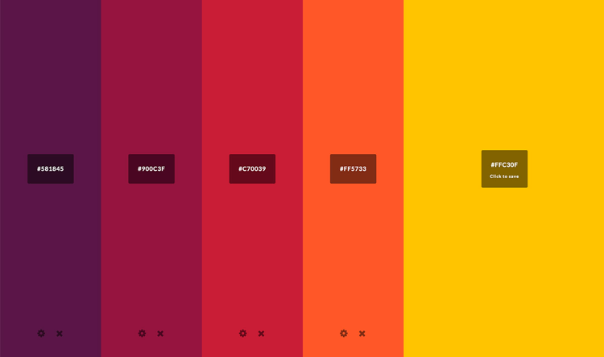
一套配色方案
配色方案确定之后，你的设计要一直使用这些颜色，无论是只有一页海报还是一本厚厚的书。一般来说，配色方案中包含 3 到 5 种颜色，而使用配色方案之外的颜色会让你的设计丧失一致性，而 5 个以上的颜色会过于混乱。
配色是有套路的，而且可以非常快
在确定了第一个颜色之后，配色其实是有套路的。在你发现套路之前，我们必须先隆重介绍「色轮」，因为我们配色的套路就是跑在这个彩色轮子上的。
配色套路的根基——色轮
色轮，又称色环，由瑞士设计师约翰·伊登提出，是用来研究色彩关系的工具。色轮上的所有颜色都是从三原色（红色、蓝色和黄色）混合相加而来，也就是说如果拥有红色，蓝色，黄色的颜料，通过不断地混合调配，就能画出色轮上的所有颜色。
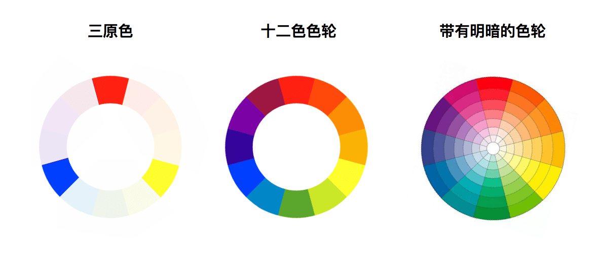
色轮
色轮中还隐藏着一些色彩关系，比如以绿和紫色两个中性色为界，红、橙、黄等为暖色，绿、蓝绿、蓝等为冷色；而站在对角的两种颜色放在一起可以形成强烈的对比，相近的颜色通常非常和谐等等。
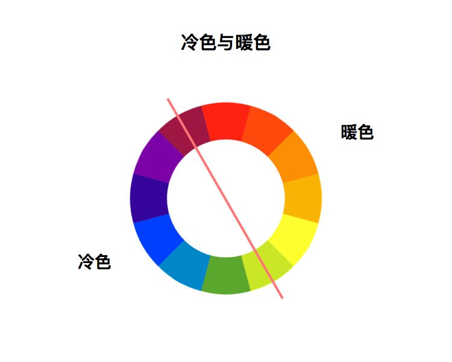
冷色与暖色
使用色轮，可以让搭配颜色异常简单，让我们做几道题试试看。下面有五个被处理过的品牌标志，请你根据现有的颜色，给画面中灰色的地方配一个颜色。大家可以先自己想一下，再看下面的答案和分析。
提示：要考虑到色彩象征以及色轮上的关系。
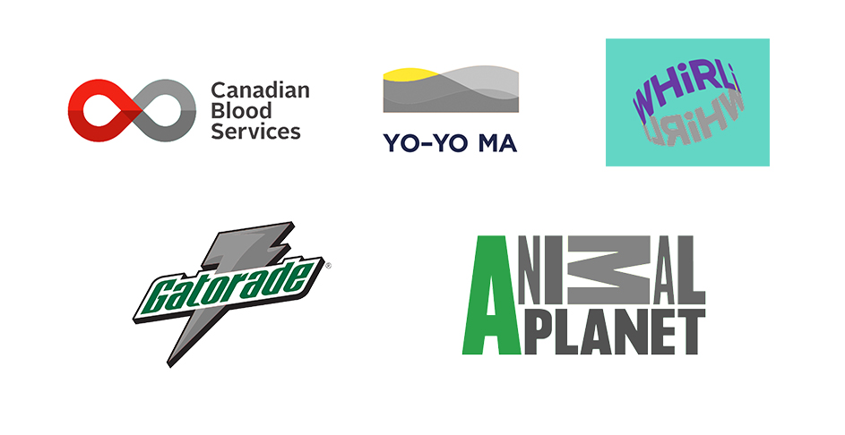
五个处理过的品牌标志
第一题：Canadian Blood Services——互补色（Complementary colors）
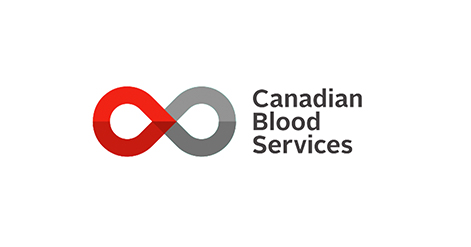
处理过的 Canadian Blood Services 标志
Canadian Blood Services 是一家全国性的非营利性慈善组织，负责管理魁北克以外加拿大所有省份和地区的血液供应。大家可以从其经营的「血液和生命」，猜测一下缺失的配色是什么。
下面我们就公布一下正确答案：
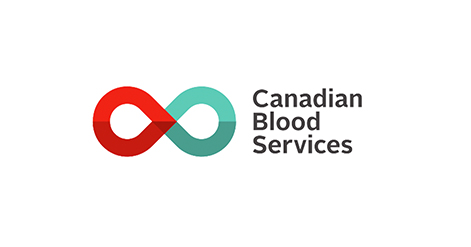
补上颜色之后的 Canadian Blood Services 标志
红+绿是一组典型的互补色，即在色轮上位置完全对立。比如黄色+紫色，红色+绿色，蓝色+橙色，这些常见的配色都是互补色。
互补色
互补色的特点是对比强烈，给人的感觉是跳跃、动感的，非常能够吸引眼球。互补色适合作为标志的颜色，不适合用于文字和背景的颜色。另外，绿色也非常符合其「血液和生命」的经营范围。
同样的，联邦快递公司的标志配色也是一套互补色，蓝色与橙色的反差和跳跃明显，令人印象深刻。在高速移动的路上也很有识别度。
联邦快递公司的标志配色
第二题：YO-YO MA——相似色（Analogous colors）
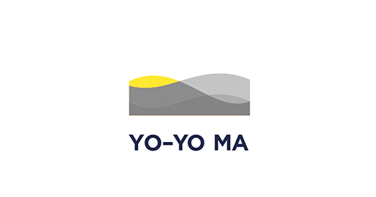
处理过的 YO-YO MA 标志
马友友是世界著名的大提琴演奏家，上面这个是马友友个人网站的标志。标志的颜色和弧度都来自于大提琴，可以算是种非常直接的颜色象征。
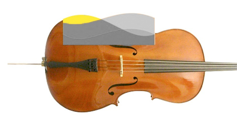
大提琴上的颜色和弧度
提示：大家可以从大提琴出发，猜测一下马友友的标志会采用另外的什么颜色？
下面公布正确答案：
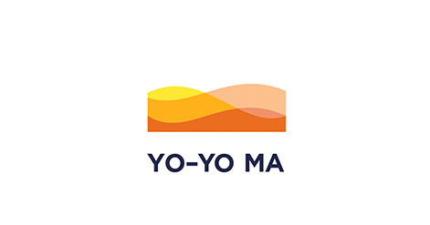
补上颜色之后的 YO-YO MA 标志
这种橙黄的搭配也正好符合大提琴的颜色。与此同时，这种取一个颜色的临近颜色并组合的配色也称为相似色。在色轮上位置相邻的颜色便是相似色，由于相似色颜色相近所以组合在一起显得和谐。
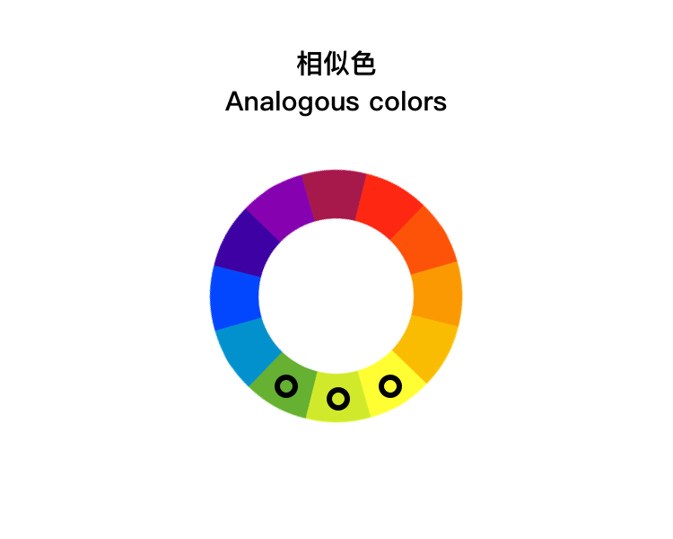
相似色
相似色适用于表达和谐、类似等关键词，或者像马友友的标志一样——只想象征一种东西的时候也很适用。比如 Mastercard 的标志配色也是一种相似色。
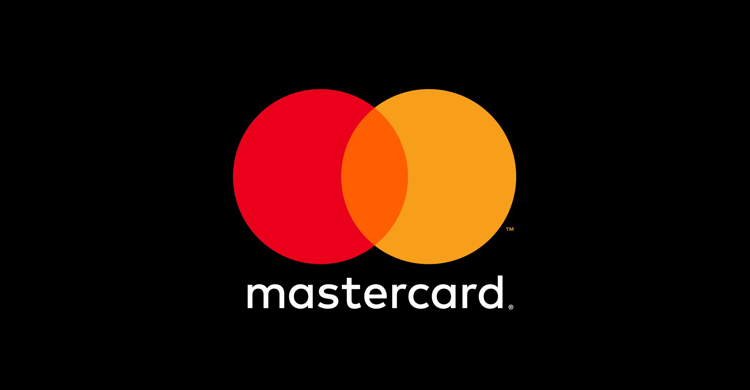
Mastercard Logo
第三题：Whirli——三色组（Triadic colors)
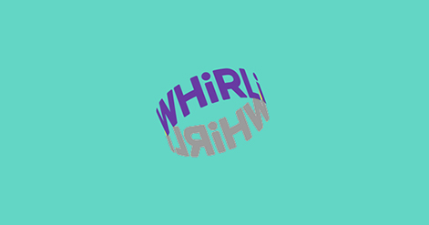
处理过的 Whirli 标志
Whirli 是一个互联网玩具租赁服务，它的服务对象是儿童以及爸爸妈妈，品牌的形象活泼可爱，还有一些新奇和惊喜的感觉。
提示：我们给出了其背景色以及一个主颜色，大家可以根据其「互联网玩具租赁服务」的形象猜测一下第三种颜色是什么。
下面公布正确答案：
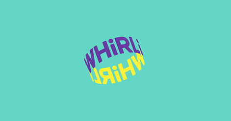
补上颜色之后的 Whirli 标志
从色彩象征来看，紫色代表着神秘，黄色则比较喜悦，两者加起来可以带来惊喜的感觉。同时，紫色+黄色+青色的搭配是明显的三色组配色，三色组的得到非常简单，拿三原色（红，黄，蓝）来说，将三原色的色轮位置连接就能得到一个三角形，旋转这个三角形得到的颜色组合就是三色组。
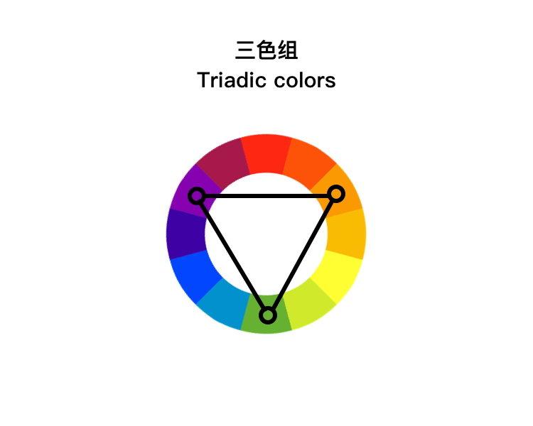
三色组
三色组的特点是色彩比较平衡，而且容易吸引视线。不过也正是因为有三种颜色，在使用的时候一定要分清三种颜色谁主谁次，如果三种颜色同样重要，反而有相互抗衡的感觉。著名的快餐连锁店汉堡王的 Logo 不仅是三色组，而且还是三原色的三色组组成的。汉堡王标志的色彩主次关系非常明显：红色主导，黄色和蓝色次之。
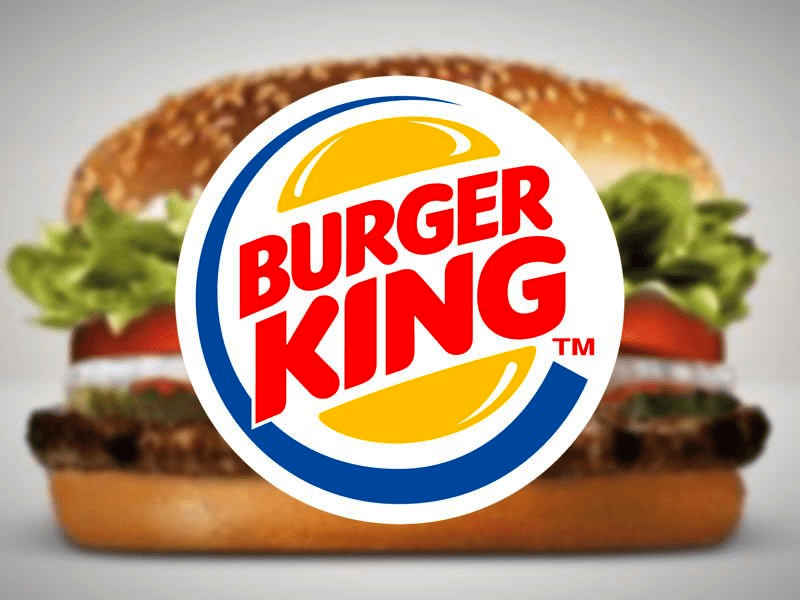
汉堡王的 Logo
与三色组类似的还有四边形色组，即色轮位置连接之后为四边形的四个颜色组成的配色方案。四个颜色组合在一起显得和谐，工整，四种颜色有种海纳百川的包容感。

四边形色组
四边形色组的例子数不胜数，而且在科技行业中可以说是一抓一大把，尤其是红黄蓝绿这样的组合。
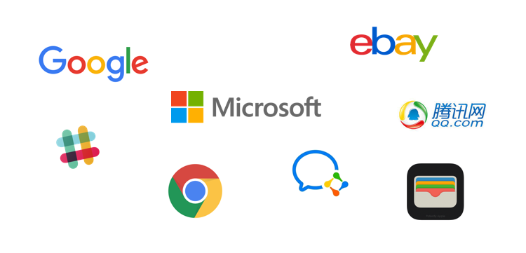
四边形色组的例子
看来红黄蓝绿方案打动了一票科技公司，有世界市场份额最大的浏览器 Chrome、最好用的搜索引擎 Google、操作系统卖的最好的软件公司微软，甚至还有最年轻的独角兽公司 Slack 等等。你是不是觉得他们实在是太懒了呢？我不这么认为，我们可以从颜色象征的角度分析出来。以上列出的这些标志和产品图标，所从事的都是平台级的服务。由于他们的产品足够大，足够广，目标人群也非常大，使用这样海纳百川的配色方案也不无道理。
但为什么具体是红黄蓝绿，而不是四边形色组的其他颜色呢？我想这个和三原色有关系。我们知道三原色是红色，黄色和蓝色。但在屏幕显示上情况稍有不同，因为屏幕上的三原色由 R（红色）G（绿色）B（蓝色）组成。如果将三原色和屏幕三原色放在一起，就正好是红黄蓝绿。
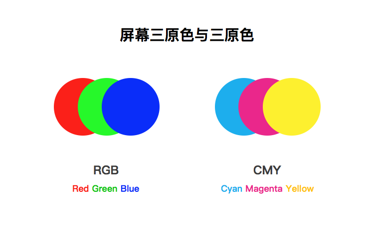
屏幕三原色与三原色
进一步来讲，人的色觉是不同波长的光在人眼中产生的感受，人眼最敏感的三个波段分别是 565 纳米左右、535 纳米左右和 420 纳米左右，刚好对应了黄色、绿色和蓝色。这样看来红黄蓝绿可真是巧妙的配色。
不过，如果你不是在做一个平台级的软件或者服务，我并不推荐你使用这样的配色，因为这四个颜色在人们的认知中已经代表着平台级服务了，而且红黄蓝绿的配色已经被用的太多了。
第四题：佳得乐——分割互补色（Split-Complementary colors）
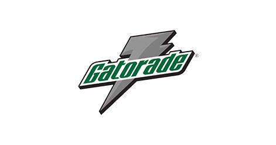
处理过的佳得乐标志
佳得乐是一种非碳酸性运动饮料。最初是提供给运动员专用，现在逐渐成为一种常见的零售饮料。 佳得乐可以 帮助身体维持体液平衡，在运动后有效的提供身体能量。
提示：大家可以从「运动饮料」的角度出发，根据现在已经有的绿色，猜测一下佳得乐饮料剩下的配色是什么。
下面公布正确答案:
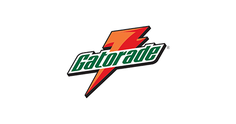
补上颜色之后的佳得乐标志
佳得乐的橙色闪电标志还是很令人印象深刻的。使用橙色代表能量以及闪电是恰当的颜色象征，也可以和绿色形成一组互补色。但请你仔细观察，佳得乐的这个橙色并不是完全的橙色，而是一边偏红一边偏黄，这便是分割互补色。
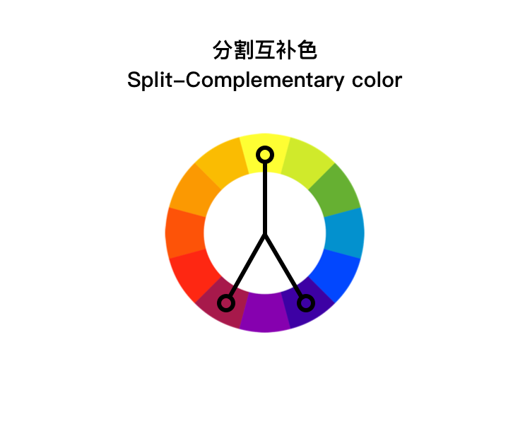
分割互补色
要得到分割互补色，先要得到一个互补色（取色轮上位置相对的颜色），但不同的是将其中一个颜色分裂开来，使用旁边的两个颜色。
分割互补色适合提现能量与动态。分割互补色和互补色一样拥有强烈的反差，但又有相似色的和谐美。分割互补色可以说是「柔和版互补色」，是相对安全的配色方案。
Firefox 浏览器图标的配色就是一套分割互补色，先得出蓝色+橙色这对互补色，再分裂橙色为红色和黄色。红色和黄色拥有着舒服的渐变，同样也象征着火与速度，背景的蓝色球形又与之形成了鲜明的对比。
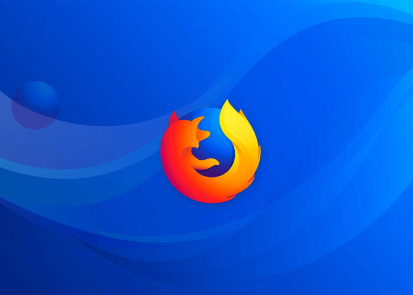
Firefox 浏览器的 Logo
第五题：动物星球频道——单色（Monochromatic color）
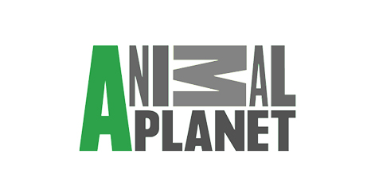
处理过的动物星球频道标志
动物星球频道（Animal Planet）是探索通信旗下的纪录片频道，播放动物相关的纪录片。
提示：大家可以从动物这个关键词出发，想一想动物星球频道应该用什么颜色填充。
下面揭晓正确答案：
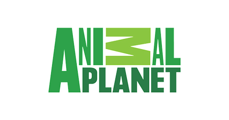
补上颜色之后的动物星球频道标志
好吧，确实都是绿的。
从颜色象征的角度来看，这个标志的配色非常单纯，象征着草原，动物，生态。而这也正是我们对动物纪录片的固有期望。
从配色方案来看，它并没有「都是绿的」这么简单。由于其绿色不只是一种绿色，而是有区别的绿色，所以这种配色方案可以称为单色。
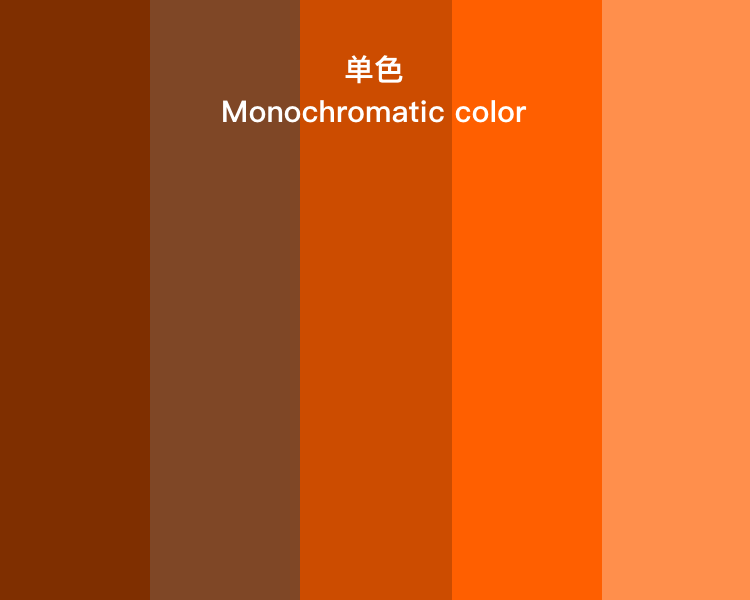
单色配色方案
单色配色的组成比较简单，选择一种颜色，其他颜色由改变明度和饱和度得来，最亮接近白色，最暗则接近黑色，饱和度最低则接近灰色。如果说在色轮上可以得出「红色」，那么调整明度可得到「深红色」，调整饱和度则可得到「玫瑰色」。
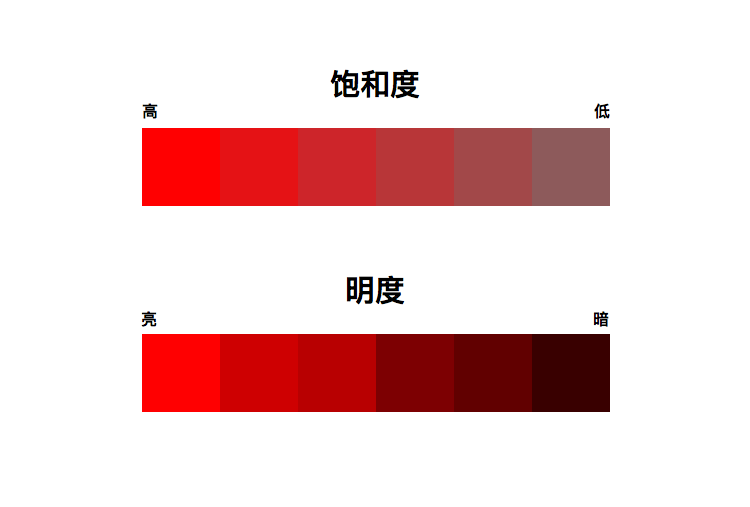
通过调整饱和度和明度得到单色配色方案
单色虽然相对单调，但其实用性不容忽视，由于整个方案的颜色都是由同一个颜色演化而来，所以视觉上更加稳定，和平，单纯。不过也有弊端，由于单色配色的色彩范围太小，看多了难免有审美疲劳的感觉。
支付平台 Paypal 同样也使用了单色配色。选好了象征严肃和商业的蓝色之后，便通过明度调节完成了配色。
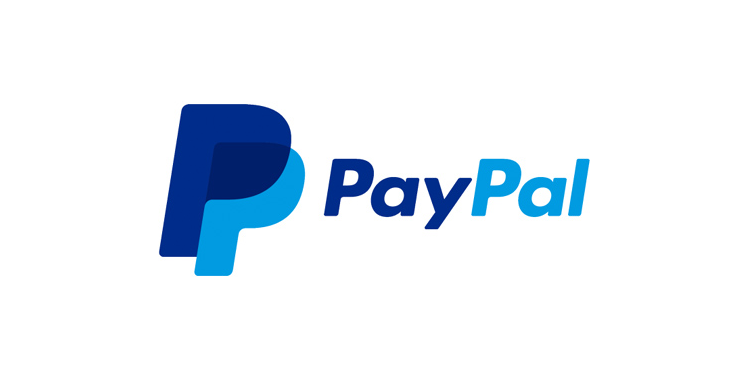
PayPal 的 Logo
除了通过改变明度和饱和度得到配色之外，单个的颜色还可以与黑色白色搭配形成配色方案。这也是一个非常有效率的配色，不过也容易看上去比较「无聊」。
黑色和白色的也是一个经典的单色配色方案，黑白配色可以显得高雅，严肃，平静，酷。而且黑白配色也可以表达「没有颜色」的感觉，更加凸现标志的形态美。
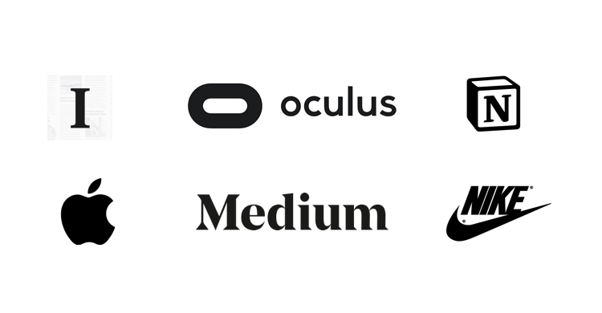
黑白配色的标志
配色工具
看了以上这些方法，真的可以在三秒内配出一套颜色了。但是，去哪儿找色轮呢？不必担心，我们有许多配色工具可供使用。下面我将按照使用难易程度为你推荐六款配色工具：
Color Hunt：小清新风格的现成配色方案
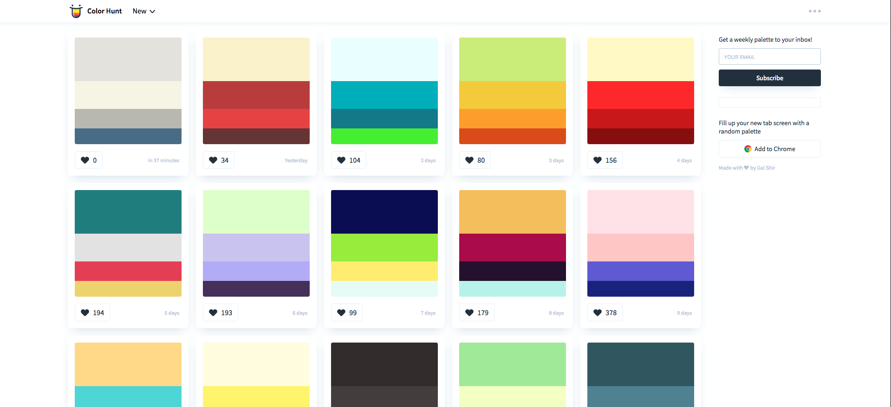
Color Hunt
Color Hunt 是每日更新的配色方案收集网站。用户分享配色并由创办人 Gal Shir 亲手把关，风格偏向小清新，质量很高，而且都可以拿来就用。我不推荐一上来就去 Color Hunt 上搜寻颜色，反之应该先独立思考颜色的意义以及想要传达的东西。如果感到过程中卡住了，Color Hunt 则是给予你灵感的地方。
NIPPON COLORS：日本传统色
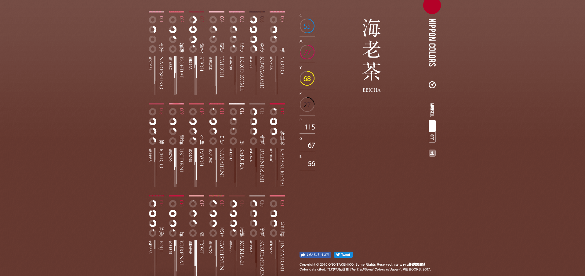
NIPPON COLORS
NIPPON COLORS 是一个日本传统色的列表，这些颜色本身就非常的「文艺范」，每个颜色还都有一个美好的名字加持。但这个网站只显示单个颜色，不显示配色方案。某种程度上可以弥补 Color Hunt 过于清新的感觉。当然，我更希望你将 NIPPON COLORS 作为一个灵感启发网站。
Palettable：当你甚至无法确定第一个颜色是什么
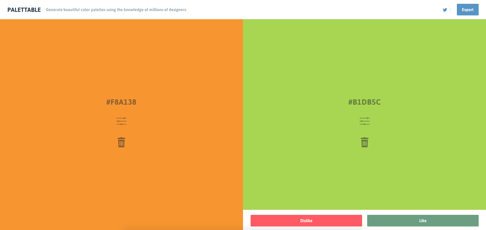
Palettable
Palettable 可以手把手帮你从零到一建立配色方案。从一个颜色开始，用户通过点按 Dislike 和 Like 决定是否接受生成的颜色，确定五次之后就能得到一个配色方案了，简直是保姆级的体验。适合完全没有想法，连第一个颜色都无法确定的时刻。
SessionsCollege Color Calculator：色彩关系清晰的色轮
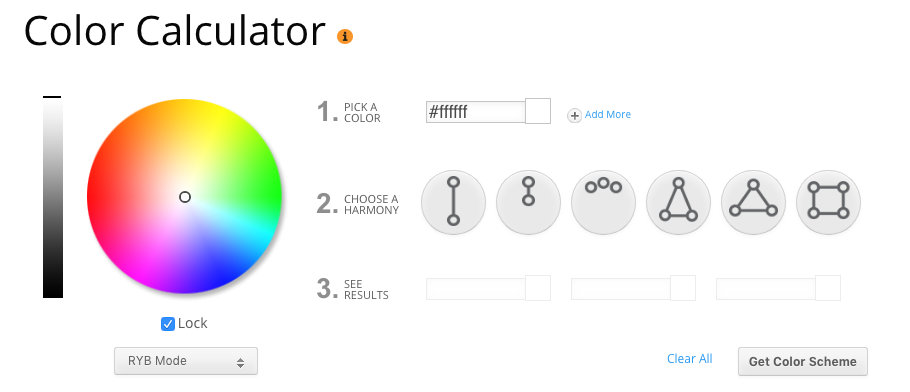
SessionsCollege Color Calculator
SessionsCollege Color Calculator 这款配色工具很好地诠释了我们这一章所讲的「配色套路」。你可以直接在「CHOOSE A HARMONY」选项中选择色彩关系，然后继续配色。
Adobe Color CC：色轮、配色方案共享二合一
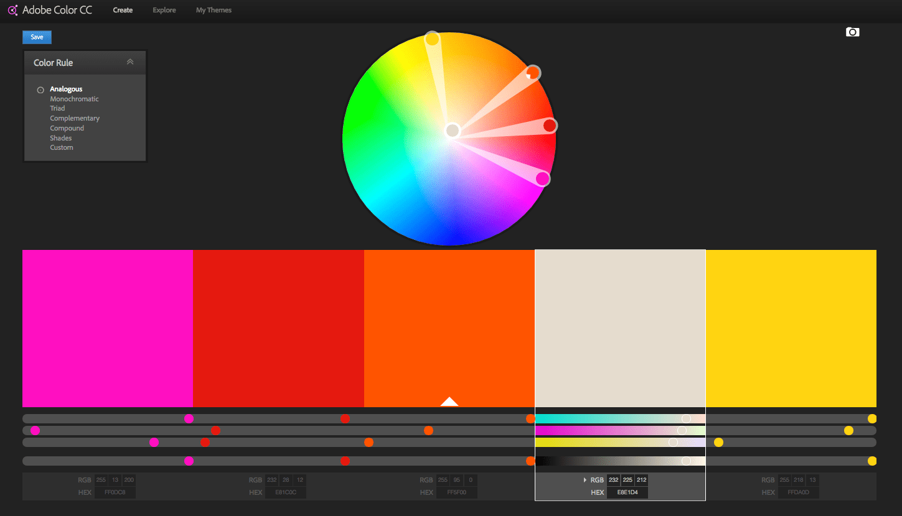
Adobe Color CC
Adobe 出品的色轮工具，我认为体验感最佳的色轮之一。除了好用的色轮，你还可以上传图片得出配色。Adobe Color CC 是免费提供使用的，而且点击上方的「Explore」，还可以看到其他用户保存的配色方案。
Paletton：最专业的色轮
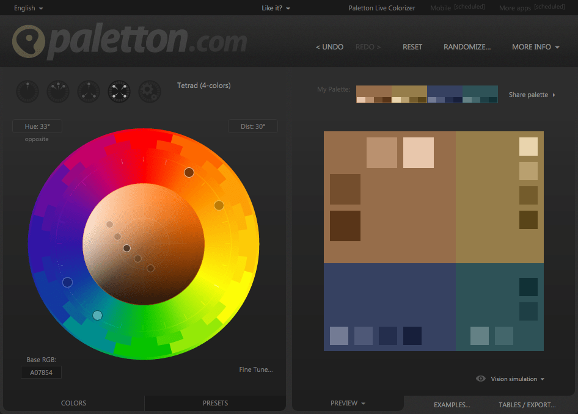
Paletton
Paletton 是极其专业的色轮工具，数据展示非常详细。左侧的色轮拥有更多的自定义选项，右侧的结果也更加丰富。适合对色彩关系掌握熟练的同学。
好的配色方案，也应该考虑到这些
在掌握这些配色方案和工具之后，在三秒内创建出一套还不错的配色方案应该不是一件难事。当然，有些配色方案虽然好看，但不一定是安全的，三秒过后请确保你有考虑到这些：
可读性
平面设计是为了更好地沟通信息而存在的，平面设计中的配色亦是如此。有些配色方案对于可读性是一种灾难，无论是图片还是文字只要用了某种配色可读性就会差。这时候就需要你调整配色方案或者字体的设置，不能为了颜色牺牲可读性。比如通常使用互补色得出的配色就非常不适合做文本与背景配色，比如这样：
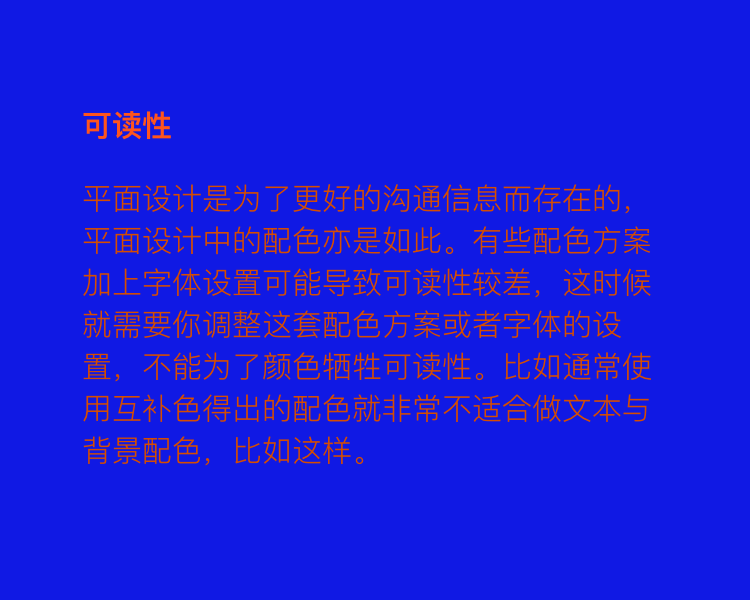
文字可读性对比
图片也是一个道理，比如在绿色的背景色下使用绿色的「可回收」图标就会影响到内容传达，你可能要改变背景颜色或者对可回收图标做反白处理。
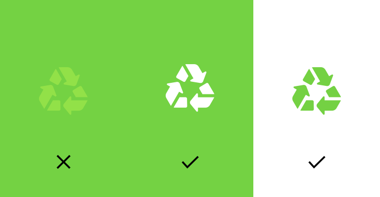
图标可读性对比
一致性
切记，制定好的配色方案要从头至尾执行，无论是什么样的媒介，无论多长或多短的内容。当然，如果你的品牌或机构已经有一套配色方案了，为其而做的设计应该与品牌或机构的配色方案保持一致。比如美国通信运营商 MetroPCS 作为 T-mobile 旗下的品牌，在最近就有一个和 T-mobile 相似的配色。
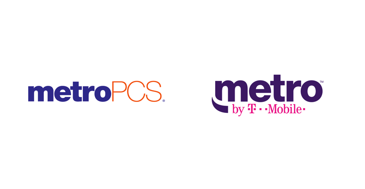
metroPCS 新旧标志对比
文化考虑
虽然色彩是非常主观的东西，但由于人类文明长期的文化积累，颜色已经成为了一种文化语言。一些颜色已经有了它的意义，我们制定配色方案的时候要有所考虑。比如绿色在许多场景下代表环保与生命，但中文场景下不适于出现在人物头顶周围区域。
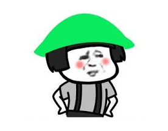
来一顶代表活力与环保的帽子
避免撞车
除了文化的考虑，避免和同行业已存在品牌形象配色撞车也非常重要。一些品牌或设计也已经在其领域里创立了一套深入人心的配色方案，比如在物流行业里顺丰的黑色+白色+红色，如果你设计了和顺丰完全不同的 LOGO 但采用同样的配色，也会给人一种山寨顺丰的感觉。
这也是为什么加多宝和王老吉会因为「红罐」大打官司。对于很多品牌，颜色已经成为了一下品牌的形象不可或缺的部分，如果颜色出了问题，就会非常不对劲。看了下面这组 Logo 交换的例子就知道配色有多么重要了：
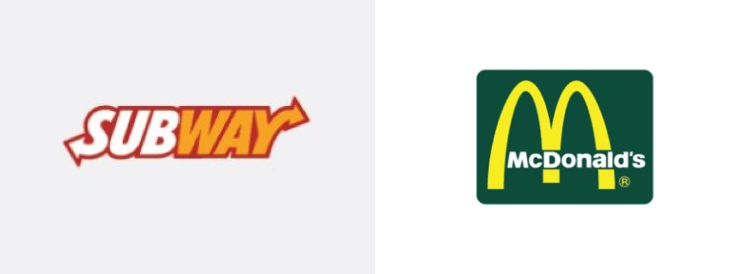
赛百味与麦当劳标志配色调换
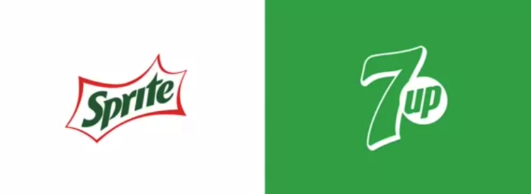
雪碧与七喜标志配色调换
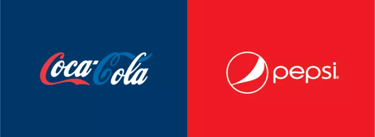
可口可乐与百事可乐标志配色调换
以上例子出自 Fast Company 的文章 Everything Looks Wrong When The Most Famous Brand Logos Swap Colors，文章中包含更多标志配色调换的例子。
色彩模式（Color Mode）
同样的颜色，使用不同的色彩模式表达，会有不一样的表达结果。下面就给大家介绍 CMYK、RGB、HEX、HSB 四种色彩模式以及其用途。
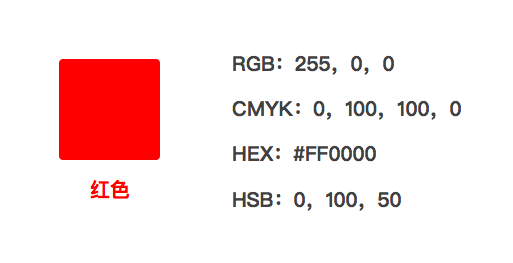
同种颜色的在四种色彩模式下的不同表达
CMYK
最主流的色彩模式是 RGB 和 CMYK。我们在电子屏幕上常用 RGB 颜色，而在印刷品上常用 CMYK 颜色，但两者颜色的原理大致相同。拿纸张来说，将彩色图片放大来看，会发现他们是由无数小点组成。每四个点一组，包含类似三原色的蓝绿色（Cyan），洋红色（Magenta），黄色（Yellow）以及黑色（Key）。通过改变四种颜色的比例便能呈现出不同的颜色，这就是所谓的 CMYK 颜色，如果最终成品是需要印刷的，CMYK 色彩模式是你唯一的选择。
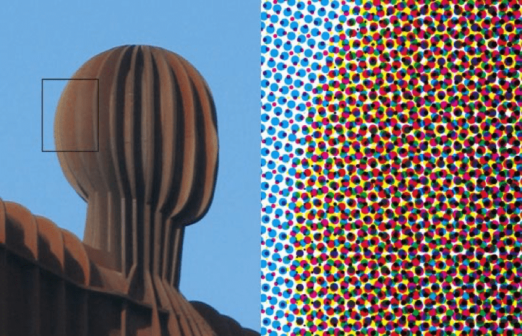
打印制品放大后的效果
RGB
电子屏幕上的情况稍有不同，我们屏幕上的每个像素都是由三个次像素组成，分别是红色（Red）、绿色（Green）和蓝色（Blue），顺其自然就会使用 RGB 表达颜色。由于电子屏幕可以自发光，只要将所有像素都暗一点颜色就能黑一些，所以不再需要黑色（Key）来调节，通过改变三个次像素各自的亮度就能呈现出不同颜色。这也是为什么我们会在屏幕上使用 RGB 色彩表达方式。
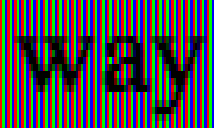
显示器放大后的效果
许许多多的打印品都是在电脑屏幕上创造的，在设计过程中等于是是在用 RGB 的显示器显示 CMYK 颜色。当然，电脑可以自动将 CMYK 颜色转换为 RGB 颜色，其中的色差仍然不可避免。
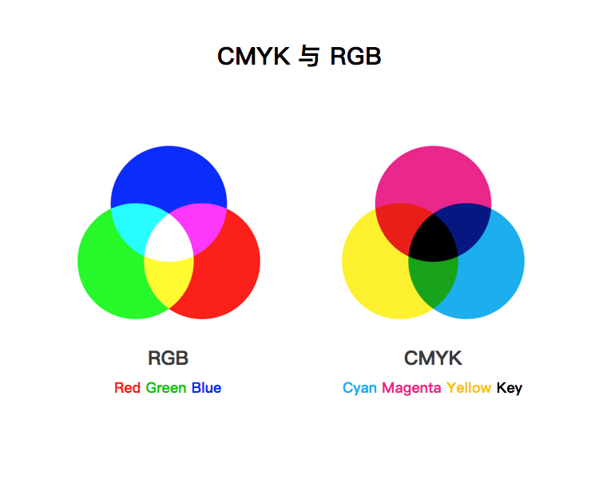
黑白配色的标志
Hex（十六进制代码）
颜色选择器上的 Hex 值
为了表示一种屏幕能够显示出来的颜色，人们研究出了很多色彩表示方式，比如我们最常用的就是使用十六进制代码（Hex）表示颜色。比如使用 RGB 表示红色的话，是 R:255, G:0, B:0。这样的表达输入量有点多，于是就用十六进制的方式将 RGB 翻译成了一个仅有六位的代码：#FF0000

分别使用 RGB 和 Hex 来表达红色
使用 Hex 值表达颜色是目前比较主流的办法，优点是只用六个数字就可以精准表达一个颜色，方便复制，许多软件都兼容。所以使用 Hex 表示颜色是我最推荐的方式。
HSB（色相，饱和度，亮度）
RGB 以及 CMYK 的表达逻辑都是「将不同比例的颜色混合起来」，这种表达逻辑与人眼「看到什么颜色就是什么颜色」的逻辑不同，人们很难直接从数据中猜出颜色到底是什么。马上要介绍的 HSB 模式解决了这个问题。HSB 又称 HSV，即 Value（明度）。
色相，饱和度，亮度与颜色的关系
其中，H 表示色相（Hue），色相将色轮分割为三百六十度，所以通过色相就能够初步判定大概的颜色；其次是 S （Saturation）表示饱和度，饱和度越高颜色越鲜艳，越低则接近无色（黑、白、灰）；最后起决定作用的是 B 表示亮度（Brightness），亮度越低就越接近黑色。
HSB 完全符合人对色彩理解的直觉，稍加熟悉，甚至能通过直接看 HSB 代码猜出其表达的颜色来。而且 HSB 非常适合「组调色方案时，不想变换亮度以及饱和度」的情况，你只需要调整 hue（色相），便能得出一个和上一个颜色不同却又十分统一的新颜色。
只改变色相即可得到风格统一的不同颜色
色卡
为了弥补电子显示和实际打印之间的色差，色卡应运而生。色卡是大量的彩色薄卡纸，拥有色彩的同时也有其对应的的数值。色卡如同一把色彩的尺子，设计师首先确定自己想要的颜色，然后在色卡上找到一样的颜色，并将其序号输入在电脑中。这样一来即使在屏幕上有色差，打印出来的颜色也是准确的。
比如苏格兰国旗的颜色就是 PMS300，是 PANTONE 色卡中的一种蓝色。
潘通（PANTONE）是一家准们开发和研究色彩的权威机构，PANTONE 色卡是是国际上最为通用的色卡。除了 PANTONE，日本的 DIC 和德国的 RAL 也生产自己的色卡，而且有着自己的色彩标识系统。
PANTONE 色卡
一本色卡通常价格不菲，在 PANTONE 的官方天猫店上，色卡价格由七八百到四五千不等，通常涵盖颜色越多价格越贵。所以这种色卡我只建议在专业的设计工作中使用或借用。
推荐阅读
这次的推荐阅读当然和色彩相关，一本和色彩象征相关的书籍，以及一个可以了解色彩潮流的网站。
《色彩的性格》——爱娃·海勒
《色彩的性格》
「为什么绿色象征萌芽的爱情而褐色象征隐秘的爱情？为什么银色是代表礼貌的色彩？为什么象征生命喜悦的橙色也是佛教中代表彻悟的色彩？20 世纪以前新娘为什么穿黑色礼服呢？」这本《色彩的性格》通过讲述故事去解释各个颜色的象征意义。
其中的一些例子可能由于年代以及文化的差别已经不再适用，但却能很好的引发我们对「色彩象征」的思考，以本书抛砖引玉，思考某个颜色在我们所处的时空与空间中的象征意义。通过这样的思考，你可以拥有更好的配色直觉。
Pantone 官网的颜色报告
Pantone
Pantone 作为专门研究色彩的机构，每年都会发布当年的流行色，比如 2016 年的石英粉和静谧蓝，2018 年的 Ultra Violet。每年发布流行色的时候都会引来很多关注和分析，其实这些在 Pantone 官网的「COLOR INTELLIGENCE」标签下都可以找得到。这个标签下除了年度颜色，还会有季度时尚色报告，比如最新的《2019 春夏伦敦时尚周色彩趋势报告》，都可以是你非常好的配色启发。
结语
本章讲解了平面设计中配色相关的知识，我们从颜色的意义开始，用题目的方式讲解了配色方案的套路，以及完成配色方案之后应该注意的一些问题。学习完本章，相信你可以在短时间内配出一套还不错的配色方案。
当然，更关键的是之前我们只能看见世间的颜色，而现在我们可以以配色知识为基础，去分析和观察配色。你会发现身边的很多配色都符合「配色套路」，也可以对它们为何采用这种配色发表观点。通过不断观察配色，你的配色水平也会不断增加，也有可能在不借助色轮的情况下完成配色。
英剧《神探夏洛克》中的夏洛克·福尔摩斯有这样一句台词：
You do see, you just don’t observe.
这句话很好地诠释了我们学习之前与之后的区别。
《神探夏洛克》
感谢你的学习。
上一期
下一期